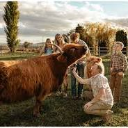
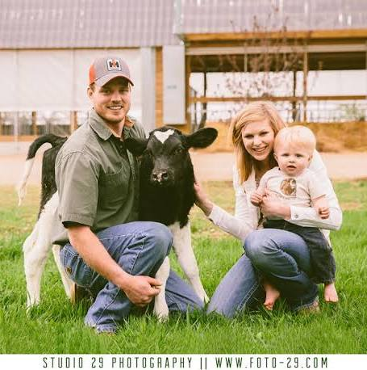
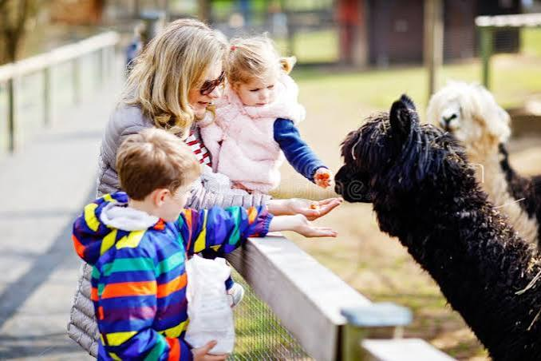
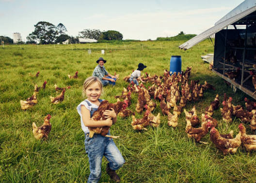

Capture Your Farm Memories
Turn your day at the farm into beautiful, lasting memories! Whether it is your child’s first time feeding an alpaca, a cozy family laugh in the green fields, or a candid moment with our friendly animals, our professional photographer will capture it all in a natural, bright, and modern style.
What included:
30-minute private session around the scenic farm spotsHigh-resolution digital photos edited in a clean, minimalist aestheticFull access to interact with your favourite animal friends during the shoot
Price
Just £25 per session (a small symbolic fee to cover the edits and help support our animal care).
(Spaces are limited! Book your slot at the farm entrance or online.)



